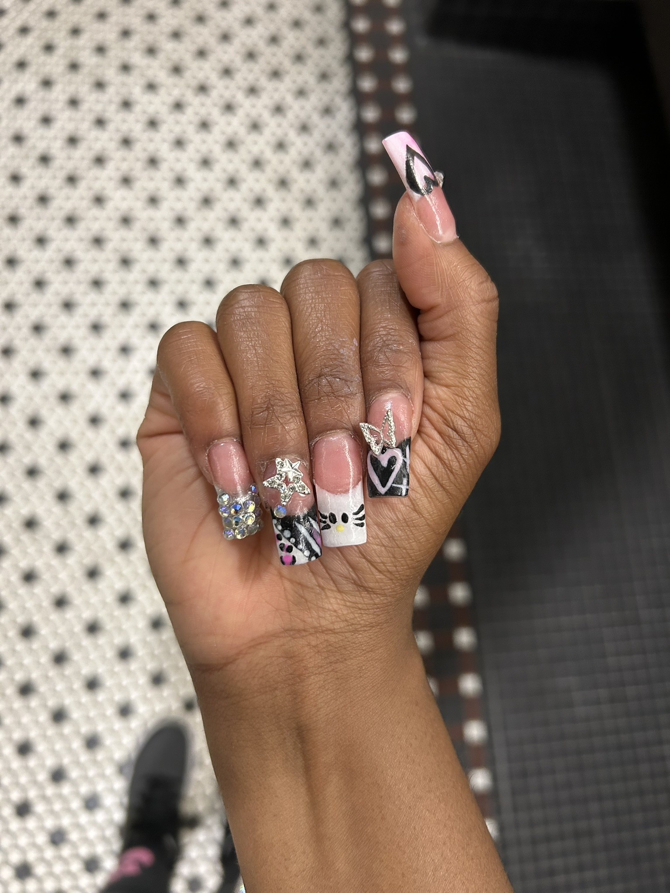
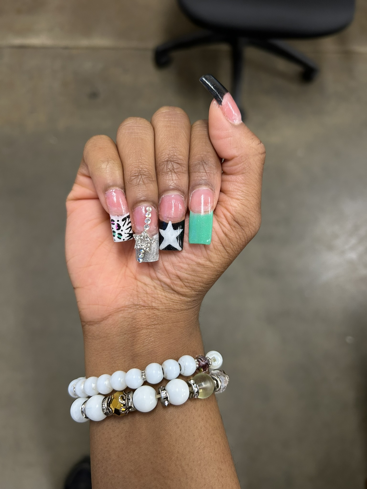
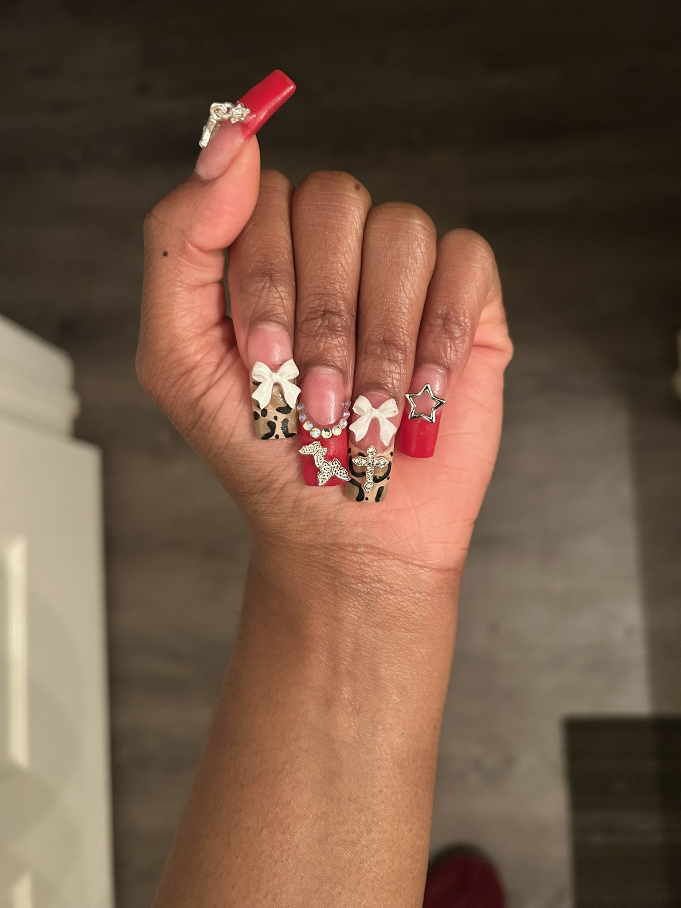
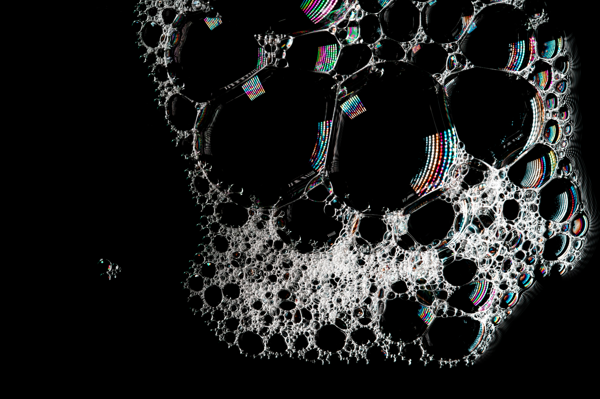

Let me give your hands the pampering they deserve with a custom manicure. I'll clean and shape your natural nails before perfecting your cuticles. Whether you want a French tip or a bold color, I'll apply your choice of polish for a flawless finish. I also specialize in detailed designs and can work with any length you desire, or add a touch of sparkle with nail charms.
Don't know exactly what you want? That's what I'm here for. With a freestyle set, you can tell me a general vibe, and I’ll use my creative vision to craft a unique design just for you. Using a mix of techniques, colors, and charms, I’ll create a set of nails that truly reflects your personality or any aesthetic. It’s the perfect option if you want a custom, personalized look and enjoy a creative surprise.
I know how hectic life can be, which is why I offer flexible services to fit your schedule. Need your nails done but can't find an open slot? My squeeze-in appointments are available for those last minute needs. If you're planning a special event or just want to relax at home, I also provide traveling services and will bring the complete nail experience directly to you. Just let me know what you need when you book, and I’ll be happy to make it happen.




Clean nails are the foundation of every great manicure. Regular cleaning not only keeps your nails looking fresh but also helps prevent buildup of oils, polish residue, and bacteria. Whether you're rocking a bold design or a simple clear coat, keeping your nails clean ensures your sets last longer and your natural nails stay healthy underneath.
Strong nails don’t just look good, they’re a sign of proper care and maintenance. From nourishing cuticle oil to strengthening base coats, keeping your nails strong helps prevent breakage, peeling, and lifting. A strong foundation means your nail art stays flawless and your natural nails thrive between sets.
Fabulous nails are all about personality, confidence, and creativity. Whether it's rhinestones, bold colors, or playful designs, your nails should be as unique as you are. From subtle elegance to head-turning glam, fabulous nails make a statement before you even say a word.
Nailah is seriously amazing. My nails are always fire, and everyone keeps asking me where I got them done. She really pays attention to detail, and you can tell she loves what she does. I'm already planning my next visit because she nailed the design I wanted. So glad I found her!
I've been going to see Nailah for my manicures for a while now, and honestly, I don't know why it took me so long. She's just so good at what she does. Also very clean and super professional. I drive almost 40 minutes to get here, and it's totally worth it. Every time I leave, I feel amazing.